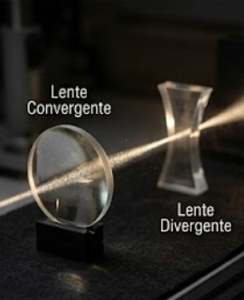

Lentes são objetos transparentes que refratam a luz de forma controlada. Existem dois tipos principais de lentes: convergentes e divergentes. As lentes convergentes são mais espessas no centro e convergem os raios de luz paralelo a um ponto focal. Já as lentes divergentes são mais finas no centro e divergem os raios de luz.